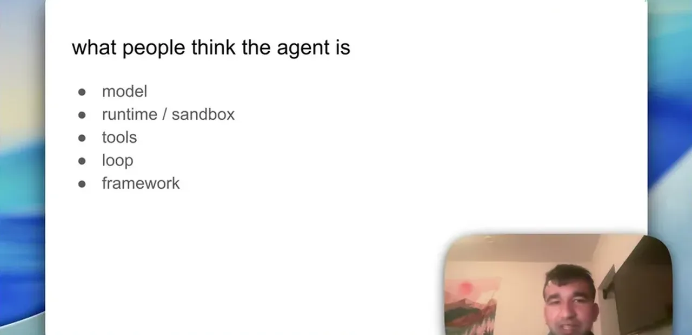
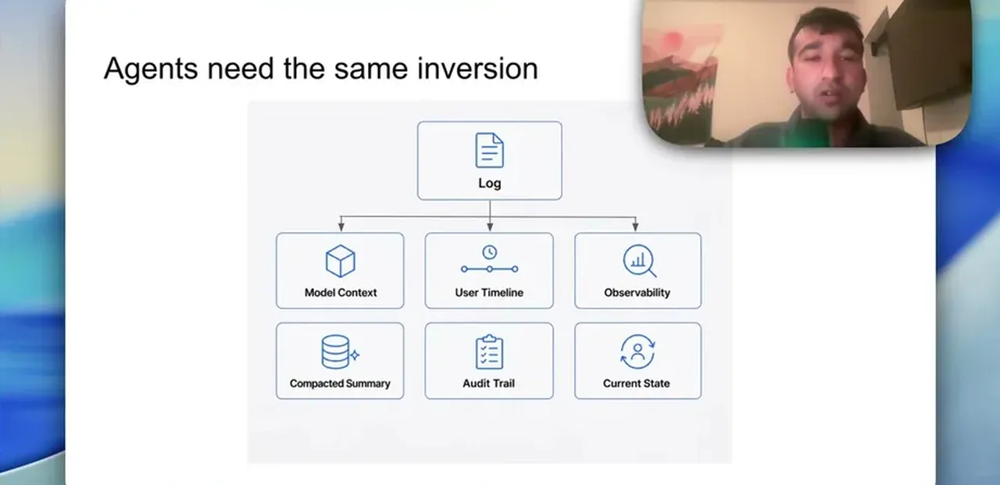
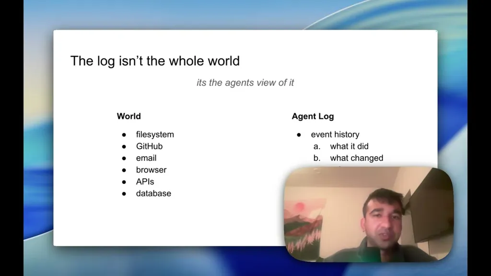
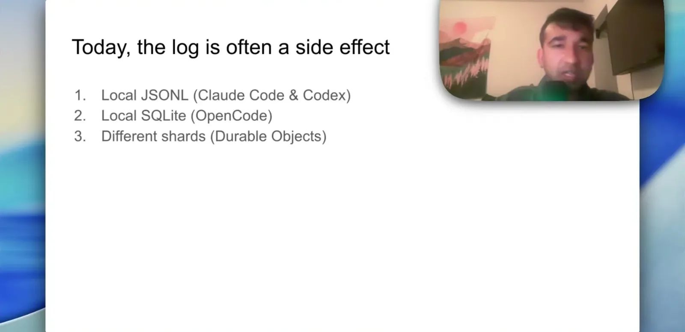
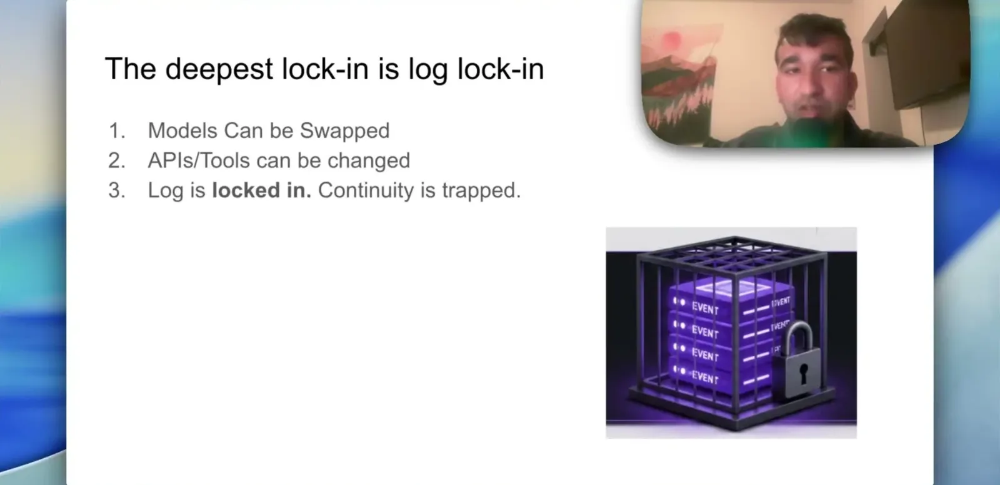

Sehgal argues that just as a Skyrim character's identity lives in the save file rather than the console or controller, an agent's identity lives in its log rather than the model or execution runtime. The log is defined as the append-only event history: every user input, model output, tool call, tool result, permission, and failure.
“It's every user input, every model output, every tool called, tool result, permission, failure and the idea is that every state transition that the agent takes is written to the log”
▶ watch at 01:35
Once the log is treated as primary, the context fed to the model, the rendered UI, debugging/traceability, auditing, and compaction are all described as projections derived from it -- the log itself is not a projection of anything else. The comparison drawn is to databases, where tables and materialized views sit on top of a durable underlying log of changes.
“The context that gets fed into the model is a projection of that log. The UI that gets rendered on top is a projection of that log. Debugging and traceability is a projection”
▶ watch at 03:38
Compaction is lossy by design and should be treated as a best-effort fork you can resume from, not a replacement for the raw log -- if you discard the raw log and keep only a compacted summary, part of the agent's identity is lost. Separately, tools can change state outside the log (editing a file, sending an email); the log only captures the agent's view of that world, not the world itself, so forking back in time cannot unsend an email or undo an external change.
“Compaction is lossy. A compacted summary is not going to perfectly reproduce the state of the agent in a smaller form. It's actually going to throw information away”
▶ watch at 04:41“If the agent sent an email, forking back won't unsend it. If some file got changed underneath, the agent won't know about it”
▶ watch at 06:13If a Claude Code process dies while waiting on a permission prompt, resuming loses that prompt and the agent stays paused, which the speaker calls a symptom of the log not being treated as the agent. With the log as state, a worker is disposable: it claims a session, advances one step, writes the result, and disappears, so failover just means a new worker picks up, and one process can advance thousands of agent sessions instead of one process per agent.
“your agent reaches a permission prompt and the process dies for whatever reason, and then you resume it, the permission prompt will be gone, and the agent will be paused”
▶ watch at 07:16“When the log is the state, you flip that model. One process can now advance thousands of agents”
▶ watch at 07:47
A log can be branched so different forks run on different models (Claude, GPT, an open-source model) from the same history up to the fork point. Sharing an agent means granting access to its log rather than copying a transcript into Slack, and migrating providers becomes an adapter problem rather than losing the agent's identity, since an agent could start on Claude, continue on GPT, and finish on another model.
“The agent should then be able to start on Claude, continue on GPT, and finish on Gwen without losing itself”
▶ watch at 09:52
Sehgal argues that models and runtimes are replaceable, but if a provider owns your log, the provider owns your agent -- and every managed agent provider (Anthropic's Claude managed agents, Google's Gemini managed agents) will want to own more of that stack (hosted loop, memory, sandboxes, compaction). He frames this as motivating Omnara's own build, where the session log is fully owned, inspected, and controlled by the user.
“The deepest form of lock-in is actually log lock-in. If a provider owns your log, then the provider effectively owns your agent”
▶ watch at 11:28
The migration claim (start on Claude, continue on GPT, finish on another model) is the one to pressure-test in practice: model behavior and prompt conventions differ enough between providers that resuming from a raw log doesn't guarantee behavioral continuity, only data continuity -- the log survives the switch, but the persona built on top of it may not (ours).
| Stance | Claim | t |
|---|---|---|
| asserts | The log is the append-only event history of an agent: every user input, model output, tool call, tool result, permission, and failure. | 01:35 |
| asserts | The context fed to the model, the rendered UI, debugging, auditing, and compaction are all projections of the log, while the log itself is not a projection. | 03:38 |
| warns | Compaction is a lossy operation and should be treated as a best-effort fork you can resume from, not a replacement for the raw log. | 04:41 |
| warns | The log records the agent's view of the world, not the whole world, so forking back cannot unsend an email or undo an external file change. | 06:13 |
| warns | If a Claude Code process dies at a permission prompt and is resumed, the permission prompt is lost and the agent stays paused, which is unacceptable in production. | 07:16 |
| predicts | When the log is the state, one process can advance thousands of agent sessions instead of running one process per agent. | 07:47 |
| predicts | An agent should be able to start on Claude, continue on GPT, and finish on another model without losing its identity if the log is primary. | 09:52 |
| warns | The deepest form of vendor lock-in is log lock-in: if a provider owns your log, they own your agent, deeper than model or API lock-in which can be swapped or wrapped. | 11:28 |
Machine-readable copy embedded in this page (script#ontology) and in the corpus ontology.